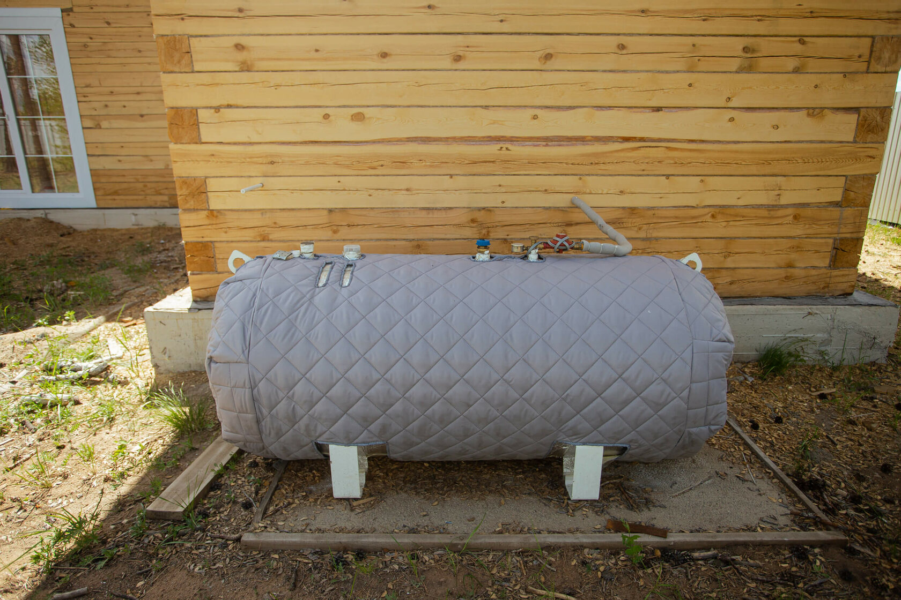

Каждый заслуживает хороший дом
Мы предлагаем современные, газифицированные решения для Забайкальского края
Посмотреть вариантыМы предлагаем покупателям красивые и современные дома. Предложение актуально не только для любителей свежего воздуха, но и для тех, кто ценит уют и спокойствие. В таких домах будет комфортно жить как одному, так и нескольким людям. Они оснащены всем необходимым для того, чтобы сохранять домашний уют в любое время года. Внутри тепло, а благодаря просторным окнам еще и светло и красиво. Компания также занимается постройкой нежилых помещений.
Монолитный ленточный фундамент с арматурой 10 мм и продольными стяжками в четыре. Внешние стены из
струганого бруса
18х18 (первые три венца лиственница, остальные сосна).
Венцы над проёмами без стыков — не менее
четырёх. Окрашены
антисептиком. Внутренние стены из струганого бруса 15х18.
Устанавливаются окна Exprof Profecta 571 (пятикамерный профиль, стеклопакет 40 мм) с фурнитурой MACO
и ручками ROTO.
Подоконник «Премиум», 200 мм. Одно французское окно размером 245x220 см.
Входные двери Torex с
терморазрывом. Секционные
гаражные ворота Алютех ПРЕСТИЖ, 45 мм, с автоматикой LG-800.
Котельная с газовым котлом Novien (24 кВт), циркуляционными насосами VCP 25-40G 130, мембранным расширительным баком 19 л (отопление) и 50 л (водоснабжение), электрокотлом Теплотех (12 кВт). Установлена система «Тёплый пол» с теплоотражающей подложкой 3 мм и трубами PE-RT 16x2,0. Теплоноситель — пропиленгликол (2483 Дж/(кг·К)). Установлен коллектор с клапанами и насосами.

В доме установлены автоматы нагрузки в двух реечном шкафу, прибор учета электроэнергии.
Проведена
разводка медной жилой,
с сечением кабеля согласно нагрузки в каждое помещение дома.
Для освещения установлены
выключатели и
патроны,
установлены розеточные группы.
Разводка выполнена в гофрированной трубке.
За прошлый год было создано более 200 проектов
Площадь дома 62 кв. м²
Площадь гаража 28 кв. м²
Количество спален одна
Этот дом отлично подойдёт пожилым парам или любителям тишины. Его компактность является главным преимуществом. Внутри расположены одна спальня и зал-студия с кухонным пространством. Пространство позволяет обустроить дом в различных стилях, например, в японском минималистичном или кантри. В доме предусмотрены все удобства: система теплых полов, насосная станция, электрическая опора и газгольдер на 900 л. Устанавливаются просторные французские окна и прочные двери. Также осуществляется отсыпка дороги и установка забора, оставляя покупателю лишь мелочи по обустройству интерьера.
Площадь дома 110 кв. м²
Площадь гаража 47 кв. м²
Количество спален две
Этот дом идеально подходит молодым парам и семьям с двумя детьми. Он имеет несколько спален, просторный зал-студия и гараж на 47 м², который можно обустроить в любом стиле. В доме предусмотрены все удобства: система теплых полов, насосная станция, электрическая опора и газгольдер на 900 л. Устанавливаются французские окна и прочные двери. Также осуществляется отсыпка дороги и установка забора, оставляя покупателю лишь мелочи для обустройства интерьера.


Площадь дома 140 кв. м²
Площадь гаража 49 кв. м²
Количество спален три
Этот дом подходит для больших семей и тех, кто ценит пространство. Здесь есть просторный зал-студия, три спальни и гараж на 49 м² для нескольких автомобилей. Предусмотрены все удобства: система теплых полов, насосная станция, электрическая опора и газгольдер на 900 л. Устанавливаются французские окна и прочные двери. Также выполняются работы по отсыпке дороги и установке забора, оставляя покупателю лишь мелочи для обустройства интерьера.
По номеру телефона: +7 924 470-11-11
ИП: Бобовский Евгений Леонидович
ИНН: 753600420885